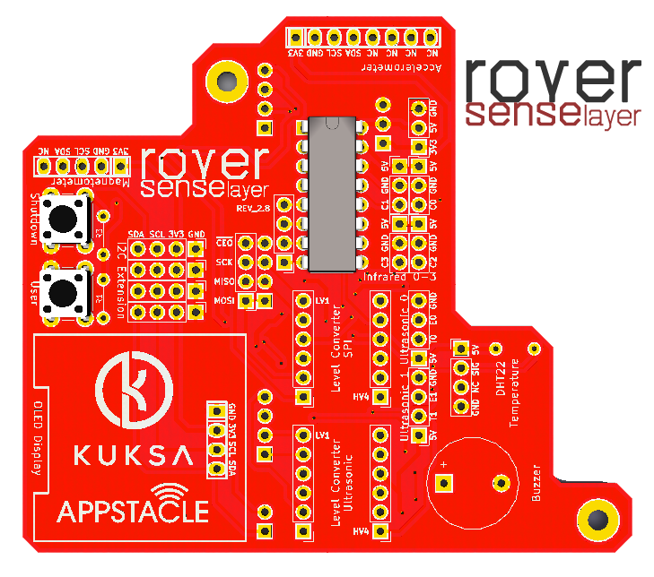

2. Rover Hardware¶
2.1. Complete Rover Hardware Requirements¶
An illustration of how components look and how they’re located in rover is given below:

Note
The complete list of materials to construct a rover is given in APP4MC Rover Wiki.
2.2. About Motor Driver Layer¶
In order to drive the motors of the DFRobot rover chassis, Pololu MC33926 Motor Driver for Raspberry Pi is used as a shield on top of Raspberry Pi 3.
For convenience in applications, following resources might be helpful (taken from Pololu):
- Schematic Diagram: Schematics
- DXF Drill Drawing: Drill drawing for designing a layer on top
- Shield Pin Locations: check image

2.3. About RoverSenseLayer Revision 2¶
{kind=link}
2.3.1. RoverSenseLayer Features¶
RoverSenseLayer Revision 2 is a customly made circuit board that is designed as a shield on top of Pololu MC33926 Motor Driver. RoverSenseLayer Revision 2 provides interfaces for OLED display, sensors, buttons, analog to digital converter, voltage converters, and more.
Complete list of interfaces are given below:
- 2x Push button
- 1x Buzzer
- 4x Sharp GP2Y0A41SK0F Analog Distance Sensor
- 1x Pololu Dual MC33926 Motor Driver Connector
- 1x A/D Converter MCP3208 DIP16
- 2x I2C-tolerant Logic Level Converters
- 1x HMC5883L Magnetometer
- 1x GY-521Y Accelerometer
- 1x OLED Display 0.96” I2C 4-pin
- 1x DHT22 Temperature and Humidity Sensor
- 2x HCSR-04 or Grove Ultrasonic Sensor
- 4x Extra I2C lines for various sensors
RoverSenseLayer Revision 2 design properties are as follows for production:
- Two-sided 82x67mm
- Minimum hole size 0.3mm
- Minimum track/spacing 6/6mil
- Cutouts required
- Plating required
- Montage drill holes M2.5
- (Preferrably) Red solder Mask
- (Preferrably) White silkscreen
2.3.2. RoverSenseLayer Schematics¶
Note
Schematics can be found in the following git repository:
2.3.3. RoverSenseLayer Source Files¶
Note
KiCad design files can be found in the following git repository:
2.4. Hardware Setup Guide¶
The following image depicts the corresponding software to hardware mapping of proximity sensors and how they should be connected to RoverSenseLayer.

The following shows the pins used by the current roverapp software (the reference image from https://de.pinout.xyz/pinout/):
{kind=link}